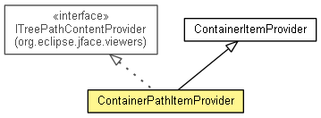

org.eclipse.net4j.util.ui.views
Class ContainerPathItemProvider<CONTAINER extends IContainer<Object>>
java.lang.Object
 org.eclipse.net4j.util.ui.StructuredContentProvider<INPUT>
org.eclipse.net4j.util.ui.views.ItemProvider<CONTAINER>
org.eclipse.net4j.util.ui.views.ContainerItemProvider<CONTAINER>
org.eclipse.net4j.util.ui.views.ContainerPathItemProvider<CONTAINER>
org.eclipse.net4j.util.ui.StructuredContentProvider<INPUT>
org.eclipse.net4j.util.ui.views.ItemProvider<CONTAINER>
org.eclipse.net4j.util.ui.views.ContainerItemProvider<CONTAINER>
org.eclipse.net4j.util.ui.views.ContainerPathItemProvider<CONTAINER>
- All Implemented Interfaces:
- EventListener, org.eclipse.jface.viewers.IBaseLabelProvider, org.eclipse.jface.viewers.IColorProvider, org.eclipse.jface.viewers.IContentProvider, org.eclipse.jface.viewers.IFontProvider, org.eclipse.jface.viewers.ILabelProvider, org.eclipse.jface.viewers.IStructuredContentProvider, org.eclipse.jface.viewers.ITreeContentProvider, org.eclipse.jface.viewers.ITreePathContentProvider, IListener
Deprecated.
@Deprecated
public class ContainerPathItemProvider<CONTAINER extends IContainer<Object>>
- extends ContainerItemProvider<CONTAINER>
- implements org.eclipse.jface.viewers.ITreePathContentProvider

| Methods inherited from class org.eclipse.net4j.util.ui.views.ContainerItemProvider |
connectInput, createContaineNode, createLeafNode, createNode, dispose, elementAdded, elementRemoved, executeRunnable, fillContextMenu, filterRootElement, getChildren, getErrorText, getFont, getForeground, getImage, getNode, getNodes, getParent, getRoot, getRootElementFilter, getSlowText, handleInactiveElement, hasChildren, isSlow |
| Methods inherited from class org.eclipse.net4j.util.ui.StructuredContentProvider |
getDisplay, getInput, getItalicFont, getViewer, inputChanged, notifyEvent, refreshElement, refreshSynced, refreshViewer, revealElement, selectElement, updateLabels |
| Methods inherited from class java.lang.Object |
clone, equals, finalize, getClass, hashCode, notify, notifyAll, toString, wait, wait, wait |
| Methods inherited from interface org.eclipse.jface.viewers.ITreePathContentProvider |
getElements |
| Methods inherited from interface org.eclipse.jface.viewers.IContentProvider |
dispose, inputChanged |
ContainerPathItemProvider
public ContainerPathItemProvider()
- Deprecated.
ContainerPathItemProvider
public ContainerPathItemProvider(IElementFilter rootElementFilter)
- Deprecated.
hasChildren
public boolean hasChildren(org.eclipse.jface.viewers.TreePath path)
- Deprecated.
- Specified by:
hasChildren in interface org.eclipse.jface.viewers.ITreePathContentProvider
getChildren
public Object[] getChildren(org.eclipse.jface.viewers.TreePath path)
- Deprecated.
- Specified by:
getChildren in interface org.eclipse.jface.viewers.ITreePathContentProvider
getParents
public org.eclipse.jface.viewers.TreePath[] getParents(Object element)
- Deprecated.
- Specified by:
getParents in interface org.eclipse.jface.viewers.ITreePathContentProvider
addNode
protected void addNode(Object element,
ContainerItemProvider.Node node)
- Deprecated.
- Overrides:
addNode in class ContainerItemProvider<CONTAINER extends IContainer<Object>>
removeNode
protected ContainerItemProvider.Node removeNode(Object element)
- Deprecated.
- Overrides:
removeNode in class ContainerItemProvider<CONTAINER extends IContainer<Object>>
disconnectInput
protected void disconnectInput(CONTAINER input)
- Deprecated.
- Overrides:
disconnectInput in class ContainerItemProvider<CONTAINER extends IContainer<Object>>
getParentPath
protected org.eclipse.jface.viewers.TreePath getParentPath(ContainerItemProvider.Node node)
- Deprecated.
Copyright (c) 2004 - 2012 Eike Stepper (Berlin, Germany) and others.